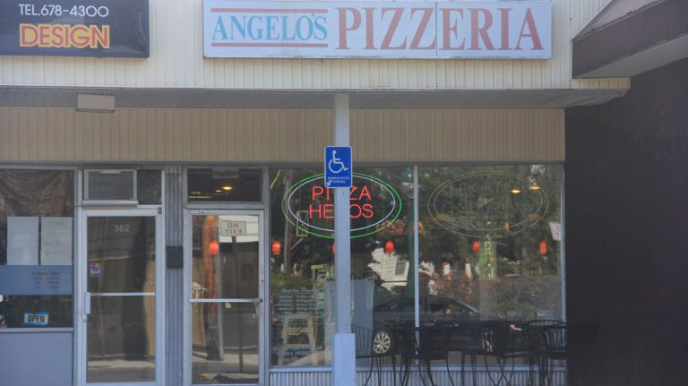

HISTORY

Angelo’s doors opened in
1990 by Angelo Buffolino. Born in a coastal town in Italy,
He instantly fell in love with
Malverne,
Angelo's cooking of Italian food served up memories of holidays, love and family.
It not only became the second home to his family, but also to our loyal customers.
Our community is the most important ingredient to our lasting success.
Over 29 years later, Gino’s continues to serve generous portions of qua